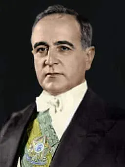
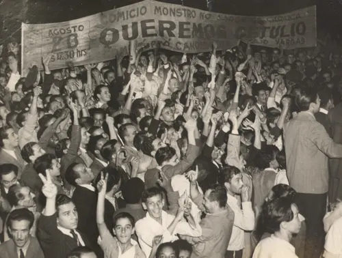
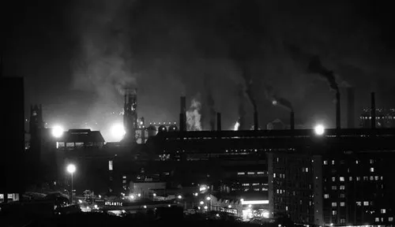
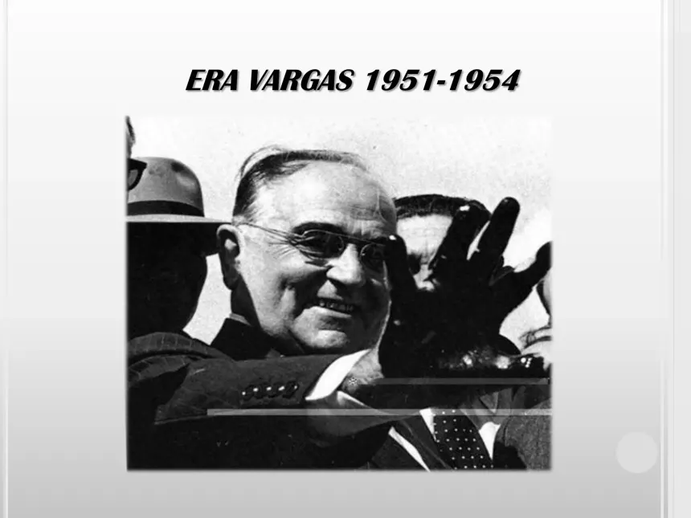

A Era Vargas
O período que transformou o Brasil moderno
A Era Vargas corresponde ao período em que Getúlio Dornelles Vargas governou o Brasil, compreendendo duas fases distintas: a primeira de 1930 a 1945 e a segunda de 1951 a 1954. Trata-se de um dos períodos mais marcantes da história brasileira, caracterizado por profundas transformações políticas, econômicas e sociais que moldaram o país que conhecemos hoje.
Nascido em São Borja (RS) em 1882, Vargas ascendeu ao poder após a Revolução de 1930, que encerrou a chamada República Velha e a política do "café com leite" – o revezamento de poder entre as oligarquias de São Paulo e Minas Gerais.
O Governo Provisório e a Revolução de 1930
A Revolução de 1930 foi um movimento armado liderado por militares e políticos descontentes com o resultado das eleições presidenciais daquele ano. O candidato da oposição, Getúlio Vargas, havia sido derrotado pelo situacionista Júlio Prestes, mas as forças revolucionárias questionaram a lisura do processo eleitoral e tomaram o poder em outubro de 1930.
Com a posse de Vargas como chefe do Governo Provisório, o Brasil iniciou uma nova fase histórica. O novo governo dissolveu o Congresso Nacional, suspendeu a Constituição de 1891 e passou a governar por decretos, concentrando poderes nas mãos do executivo federal.

O Estado Novo (1937–1945)
Após um curto período constitucional (1934–1937), Vargas aplicou um golpe em novembro de 1937, instaurando o Estado Novo – um regime ditatorial inspirado nos regimes autoritários europeus da época. Uma nova Constituição, apelidada de "Polaca", concentrou ainda mais poderes no Executivo.
Durante o Estado Novo, o Brasil viveu sob censura à imprensa, perseguição a opositores políticos e restrição às liberdades civis. O Departamento de Imprensa e Propaganda (DIP) controlava os meios de comunicação e produzia uma intensa propaganda governamental, apresentando Vargas como o "pai dos pobres".
Apesar do caráter autoritário, o Estado Novo foi também um período de intensa modernização industrial. A Consolidação das Leis do Trabalho (CLT), promulgada em 1943, regulamentou direitos como salário mínimo, jornada de 8 horas e férias remuneradas.

Industrialização e Trabalhismo
Um dos aspectos centrais do varguismo foi a política de industrialização por substituição de importações. A fundação da Companhia Siderúrgica Nacional (CSN) em 1941, em Volta Redonda (RJ), foi um marco desse projeto, tornando o Brasil produtor de aço.
No segundo governo (1951–1954), Vargas criou a Petrobras (1953), sob o lema "O petróleo é nosso". No campo trabalhista, construiu uma relação direta com os operários por meio do corporativismo trabalhista, garantindo enorme popularidade.

O Fim da Era Vargas
O segundo governo foi marcado por crescente instabilidade política. Em agosto de 1954, após um atentado contra o jornalista Carlos Lacerda em que morreu um major da Aeronáutica, os militares exigiram a renúncia de Vargas.
Na madrugada de 24 de agosto de 1954, Getúlio Vargas tirou a própria vida com um tiro no coração no Palácio do Catete. Deixou uma Carta-Testamento denunciando as forças que conspiravam contra o Brasil, transformando-se em mártir nacional.

Fale Conosco
Tem dúvidas, sugestões ou correções sobre o conteúdo desta página? Envie sua mensagem através do formulário abaixo.

Painel de Fotos
Um mosaico com registros visuais da Era Vargas.
Galeria Histórica
Referências
- FAUSTO, Boris. História do Brasil. 14. ed. São Paulo: Edusp, 2012.
- SKIDMORE, Thomas E. Brasil: de Getúlio Vargas a Castelo Branco. Rio de Janeiro: Paz e Terra, 1982.
- PANDOLFI, Dulce (org.). Repensando o Estado Novo. Rio de Janeiro: FGV, 1999.
- Imagens: Wikimedia Commons (domínio público).